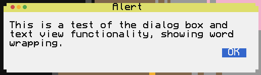

CCKit2
Application
- CCAppearance
- CCApplication
The CCApplication class is the main class that controls the app run loop, handles events, and manages the lifecycle of the program.
- CCEvent
A CCEvent holds information about a single event that was triggered by the system, application, or window manager.
Holds information about a single menu in the menu bar, either as a top-level menu or a submenu.

Stores information about a single menu item.
- CCApplicationDelegate
An application implementing the CCApplicationDelegate interface can be used to receive life cycle events from the application.
- CCApplication
- CCEvent
Holds information about a menu item in a serializable way.
- CCApplicationMain
Starts the application main loop by creating the shared CCApplication, creating the main window with the specified view controller class, and running the main event loop.
Core
- CCGraphicsContext
The CCGraphicsContext class is used to draw onto a surface with various transformations applied on top.
- CCImage
A CCImage represents an image that can be displayed on screen.
- CCLayoutConstraint
The CCLayoutConstraint class defines a rule that constrains a value of one view's geometry to another view, following a linear equation. Use constraints to make a UI that automatically handles resizing.
- CCResponder
The CCResponder class handles receiving events from the application. Any object that wants to receive events must extend from CCResponder.
- CCLayoutConstraint
Types
- WeakRef
Holds a weak reference to an object.
- CCKey
Holds a list of key constants used in CCKit2. These are independent of system- specific codes; use this to check keycodes.
- CCColor
Represents a color on screen, which can be modified with palettes.
- CCColour
Represents a color on screen, which can be modified with palettes.
- CCError
Represents an error thrown by the system.
- CCKeyCombo
Defines a key combination with modifiers.
- CCPoint
A point in space.
- CCRect
A rectangle has both a position and size.
- CCSize
A size with width and height.
- CCColor
Represents a color on screen, which can be modified with palettes.
- CCColour
Represents a color on screen, which can be modified with palettes.
- CCRectIntersection
Calculates the intersection of two rectangles.
View Controllers
- CCViewController
The CCViewController class is the primary way to design behavior for a view or window. It owns a root view which is tied to the view controller, whose lifecycle is defined by the view controller.
Views
- CCBoxView
A box view displays its contents inset inside a rectangular box.
- CCButton
A button implements a simple clickable region with text, which triggers a function when clicked.
- CCCheckbox
A checkbox is a type of button that is either on or off.
- CCComboBox
A combo box allows selection from multiple items in a compact button view.
- CCControl
CCControl is the base class for many selectable input items.
- CCImageView
A CCImageView displays images on the screen.
- CCLabel
A label displays a single line of text without wrapping.
- CCOutlineView
An outline view is a type of table which displays hierarchical data in groups which can be expanded and collapsed.
- CCProgressIndicator
A CCProgressIndicator displays a progress bar or wheel.
- CCRadioButton
A radio button is a type of button that can only have one button active in a group. Groups are established when radio buttons share superviews and state change actions.
- CCScrollTextView
A scrolling text view displays long text in a vertically scrolling view.
- CCScrollView
A scroll view displays larger content inside a smaller view, which can be scrolled to see the whole content.
- CCSegmentedButton
A segmented button displays multiple buttons in a single view, with only one selected at a time.
- CCSlider
A slider allows input of a progressive value.
- CCStackView
A stack view arranges child views in an either vertical or horizontal fashion, automatically resizing each view to fit, with optional weighting.
- CCTableView
A table view displays rows of content separated into columns, with the ability to select one or more rows. Data is sourced from an external object (
CCTableViewDataSource), which is used to precisely set up the configuration of each row, column and cell. The view is kept in a scroll view, which allows automatic overflow control.
- CCTableViewStaticDataSource
This class defines a default instance of
CCTableViewDataSourcewhich reads data from a 2D array of strings or numbers.- CCTabView
A tab view allows switching between multiple tabbed views in a single parent view, using a segmented button to select each tab.
- CCTextField
A text field allows inputting text in a single line.
- CCTextView
A text view displays multiple lines of text with wrapping.
- CCToggleButton
A toggle button is a version of a regular button which toggles between on and off when clicked.
- CCView
The CCView class is the base for all displayable objects on screen. It handles rendering the element, resizing subviews, and user interaction. Subclasses can override the default behavior to provide custom elements.
- CCOutlineViewDataSource
An outline view data source provides the content for an outline view.
- CCOutlineViewDelegate
Use this interface to receive messages on certain events from an outline view.
- CCTableViewDataSource
A table view data source provides the information necessary to construct a
CCTableView. It reports the number of rows and columns in the table, as well as the size of columns and contents of each cell. A default implementation for basic data is available inCCTableViewStaticDataSource.- CCTableViewDelegate
Use this interface to receive messages on certain events from a table view.
- CCProgressIndicator
- CCTextView
Windows
- CCDialog
A dialog displays a new window on the screen with the specified message.
- CCScreen
The CCScreen class represents a single display that holds windows. This is usually the main terminal screen, but it could also be a monitor.
- CCWindow
The CCWindow class represents a window displayed on screen. A CCWindow is backed by a window region on the window server, and can be moved around, stacked, and hidden. It controls all drawing to the window region it owns, holds the view controller and views that are drawn to the region, and handles events sent from the window server to the window.
- CCWindowDelegate
- CCWindowManagerConnection
The CCWindowManagerConnection interface is used by classes that implement a connection to a window server, which hosts all of the windows and handles things like drawing, decorations, positioning, and occlusion.
- CCWindowManagerFramebuffer
The CCWindowManagerFramebuffer interface represents the underlying framebuffer that is used as a render target for a window. It contains methods similar to a CraftOS window, but with additional methods relating to window ordering and other window manager-specific tasks. This type can only be constructed through a CCWindowManagerConnection instance.
- CCWindowManagerGraphicsFramebuffer
- CCWindow
- CCWindowManagerWindowOptions
Holds parameters for window creation.
- CCDefaultWindowManagerConnection
Creates a new window manager connection for the current platform's default connection type.
Stores parameters that define the appearance for an application.